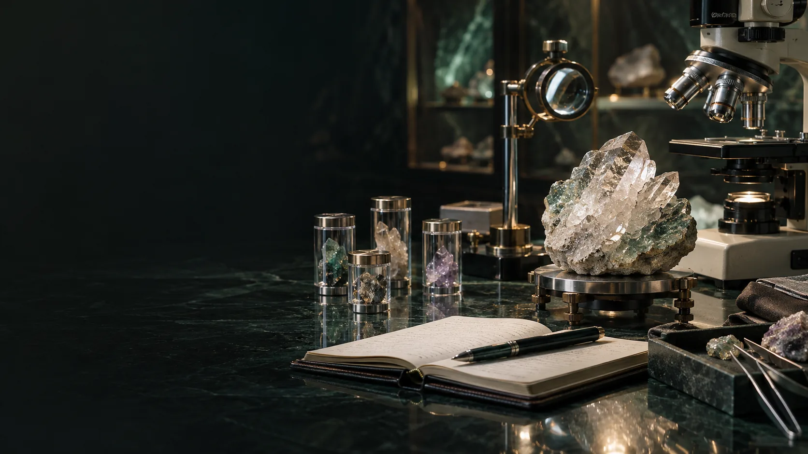

RESEARCH / EVIDENCE AND OPEN INQUIRY
Turn wonder into a question.
Material behaviour, personal meaning, biological change and model fidelity need different kinds of evidence. A useful research record keeps those distinctions visible.
Five labels for five kinds of claim.
Published research supplies findings within its study conditions. A working specification states intended behaviour. A participant account describes lived meaning. A traditional association has a named context. A future objective describes a direction. None of these labels automatically supplies the others.
The mind over matter coefficient.
The Geode document proposes an outcome-specific standardised comparison: the practice-related change minus a matched-comparison change, divided by a prespecified baseline standard deviation. The original units, uncertainty, session and participant counts remain in the report. This is a proposed analysis definition, not a validated universal coefficient.
Separate material, practice and expectation.
A proposed factorial design varies material condition and intention practice independently. Random order, coded specimens where feasible, expectation measures and participant/session structure address alternative explanations. Instrument studies retain temperature, vibration, interference, handling and reference-specimen records.
Longevity is a horizon with measurable steps.
The CALERIE paper concerns caloric restriction and DNA-methylation measures in its trial population. It does not test Aura Genesis, a Geode or HBOT. Biological-age measures need intended-use validation and relevant outcomes before clinical interpretation. The source’s longevity escape velocity ambition remains a research horizon.
A human study has its own review.
The adult feasibility plan needs a question, suitable comparator, endpoints, sample-size rationale, analysis, missing-data handling and stopping rules. Current institutional procedures and the National Statement inform review. Bench, software and material readiness precede human integration.